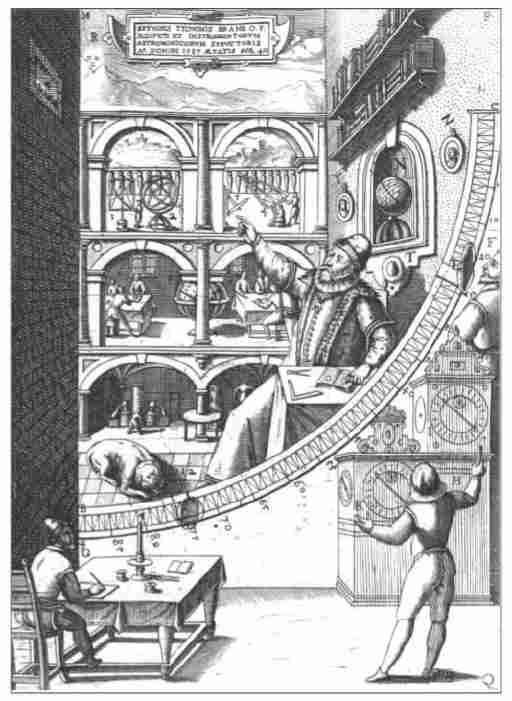
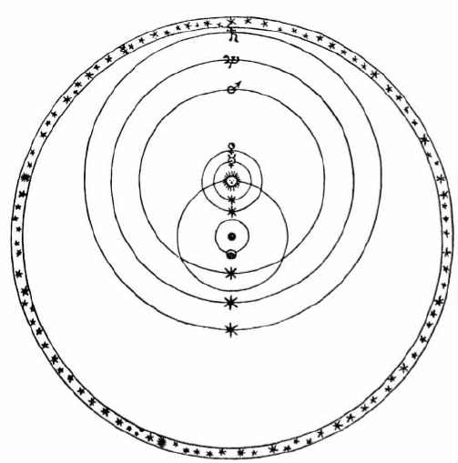
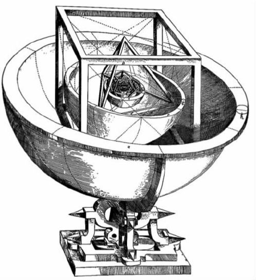

哥白尼就他的目的以及着手实现其目的的方式而言，可能是传统的，但是他主张地球是运动的则提出了一整套的问题：是什么使地球运动？我们没有感觉到运动，是怎么回事？何以我们垂直向上射出的箭会回落到地面原先被射出的地方？如果我们观测恒星，当我们围绕太阳运行，每6个月从太阳的一边转到另一边时，为什么我们没有观测到恒星的视运动“周年视差”？我们又如何说明基督教《圣经》中那些似乎暗示了太阳在运动的段落？
有的人受《天体运行论》的未署名序言所误导，相信哥白尼自己并不主张地球是真正地在其轨道上运动；仅仅是为了更加成功地“拯救表象”，他才使用了几何模型，其中地球被假想成运动的。另有些人——包括下一代几乎所有能干的数学天文学家——则专注于精心利用这些模型以拯救表象，从而忽视了哥白尼《天体运行论》的第一卷，在书中他清楚地说出了他的信条。又有些人再次寻求某种折中，其中有个人叫第谷·布拉赫（1546—1601），他在哥白尼创新的地方保守，而在哥白尼保守的地方创新。
第谷出身于一个丹麦贵族家庭，但是他并不按照封建社会里他的阶级成员所采取的方式生活，而是追求自己的学术爱好，其中天文学为他的最爱。1563年发生了一次木星和土星的“合”。因为这两颗星是5颗行星中运动得最慢的，它们的“合”，亦即木星赶上土星，是罕有的事件，每20年才会发生一次，从星相学上讲是最不吉利的。十多岁的少年第谷在1563年“合”的时间前后对事件作了观测，并下结论说，13世纪《阿尔方索星表》对它的预报超时一个月，即使是基于哥白尼模型的现代《普鲁士星表》也误差了几天，他认为这是不可接受的。不久之后，他就投身于观测天文学的改革。
像他的前辈那样，哥白尼对于用过去传下来的观测资料做研究甚为满足；只有当不可避免时，才会作新的观测而且使用的还是不尽人意的仪器。第谷的工作标志着观测天文学古代和现代的分界线。他将观测的精度视为建立好理论的基础。他梦想有一座天文台，可供他从事研究和开发精密仪器，并且有个熟练的助手团队负责测试仪器甚至编制一个观测资料库。利用他与高层的接触，他说服了丹麦国王弗雷德里克二世将汶岛授予了他，在那里，他于1576年至1580年间，建立了现代首家科学研究机构——乌兰尼堡（意为“天之城堡”）。
乌兰尼堡内一应俱全：4个观测室，众多卧室，餐厅，图书馆，炼金室，印刷所。在岛上的别处，甚至还有个造纸厂，这样第谷在出版他的著作时就完全可以自给自足。4年之后，第谷增加了他的设施，有了一个部分建于地下的卫星天文台“星堡”，其中的仪器和乌兰尼堡的不同，它们建在稳固的基座上并遮蔽了强风。但是，他不愿意承认乌兰尼堡有不尽人意之处，他说：再建一座天文台是为了阻止作平行观测的两队观测者之间互相串通。

图12 乌兰尼堡第谷天文台中的大墙象限仪，墙是南北向的，观测者（在最右边，可勉强瞥见）在测量一个过子午线中天的天体高度。一名助手正大声叫出过中天的时刻，另一名助手正记录着观测。第谷和天文台各式人等的面貌被画在了墙上的图画中。
第谷留在汶岛直至1597年。那时弗雷德里克已被克里斯蒂安四世所接替，后者对第谷和他傲慢的举止表示不满，并给他的生活制造了日益增多的困难。于是第谷离职了。两年以后，他成为了布拉格皇帝鲁道夫二世的数学家。第谷已经失去对观测的热情；有的仪器留在汶岛，而其余则干脆存放了起来。但是他拥有对太阳、月球和行星的精确观测的大量资料，那是他的团队在汶岛获得的。这些资料被证明对开普勒的工作起了决定性的作用。作为助手，开普勒加入了第谷的团队，并且在第谷1601年逝世后，接替了他。
第谷是现代观测者中的第一人，在他含有777颗恒星的星表中，最亮恒星的位置已精确到1弧度左右。他自己可能最为他的宇宙论骄傲，但伽利略则并非是唯一一个将它视为是一种倒退的妥协的人。第谷欣赏日心行星模型的优点，但也意识到了对地球运动的异议，包括源自动力学、基督教经文和天文学的异议。尤其是即使使用他那高等的仪器，也观测不到周年视差，这暗示着哥白尼的辩解（恒星太遥远以至于不能观测到其周年视差）现在看来是非常没有道理的。根据他的计算，当恒星至少比土星远上700倍时，他才会出错，而且在行星和恒星之间如此浩瀚的、无目的的、空荡荡的空间实无意义可言。
因此，他寻找着一种宇宙论，它具有日心模型几何学的优点，但又坚持认为地球为物理上静止在宇宙中心的天体。解决办法在事后看似乎是显然的：使太阳（和月球）围绕居于中央的地球转动，并使5颗行星成为太阳的卫星。但是发现之路通常都是曲折的。1578年，如同千年之前的马丁纳斯·卡佩拉那样，第谷在思考着使金星和水星成为太阳的卫星。到了1584年，他已将所有五大行星都变成了太阳的卫星，但这就意味着携带火星的球体会和携带太阳的球体相交。
也就在那时，第谷明白了他在16世纪70年代作的观测的意义。1572年11月，一颗亮到足以白昼可见的恒星状天体出现在仙后座。有史以来，天空就被认为是没有变化的，但该天体却好像是颗亮的恒星。虽然他只有26岁而汶岛的工作还没有展开，但作为一个观测者，第谷已经取得了进步，可以确定该对象是天体而不是大气。其他人在这方面展开了争论，但是第谷将他们的观测作了一个判定性分析，最后解决了问题：天空的确能够改变。
有人可能认为彗星已经足够证明这一点了，但对亚里士多德学派的人来说，彗星的“来了又走了”充分证实了它们是天体（或者更准确地说，是大气）。正如亚里士多德本人曾说明过的，彗星是旋转的天空作用于围绕地球的大气和火而形成的，“所以每当圆周运动以任何方式搅动起原料时，在其最可燃之点就会突然燃起火焰”。
只要天空是不变的，就没有理由对亚里士多德声称彗星是大气表示异议。但是，对这颗新恒星的争议消失之后，第谷仍然抱有怀疑。只要大自然能提供他一颗明亮的彗星，他就可测量其高度并确定它究竟是大气抑或是天体。1577年，当时乌兰尼堡还在建造中，大自然就赐予他一颗彗星；第谷证实了该彗星能在行星之间自由穿行。这表明，正如他稍后认识到的那样，被认为携带行星并以地球为中心的球体并不存在。
于是，对他的宇宙论的激烈反对意见消失了。在他那本1588年出版的论彗星的书中，他概略地提出了他的体系与太阳和月球运动的详细几何模型。
恒星直接位于土星的范围之外，与地球的距离约为地球半径的14000倍，所以第谷的宇宙甚至比托勒密的宇宙还要紧凑。

图13 第谷宇宙体系略图。地球位于中心，太阳和月球围绕着它运行。地球本身被五大行星绕转，太阳带着它们绕地球旋转。恒星在最外面的行星土星之外。相对运动和在哥白尼体系中的情形一样。伽利略曾捍卫过哥白尼的理论，这一相对运动的情形给他造成了极大的困扰。
许多相似的折中方案在后来的几十年中浮现，而且其中许多还颇具吸引力。因为它们难以反驳，所以在支持哥白尼的论战中，它们激怒了伽利略·伽利莱（1564—1642）。作为16世纪 90年代博杜瓦的数学教授，伽利略曾用地球的周日和周年运动试图说明令人迷惑的潮汐现象。但是，一直到1609年一桩戏剧性事件发生之后，他才全心全意开始支持哥白尼。那年夏天他在威尼斯，有传言说，在荷兰有一种用两片弯曲玻璃片构成的仪器能使遥远的物体看起来很近。弯曲的玻璃能造成变形的像，所以在交易市场上是一种传统的娱乐消遣工具。对传闻做了可靠确认之后，伽利略才着手为自己建造了这样一种仪器。同年8月，他向威尼斯当局展示了一架放大率为8倍的望远镜，使得他们“感到非常惊讶”。那年的8月之后，他把放大率增大到了20倍。再过数月，他就成为了图斯坎尼大公的数学家和哲学家，这并非巧合。
直到发明望远镜为止，像他们的前辈那样，每一代天文学家看到的都是相同的天空。如果他们知道的更多，那主要是因为他们有更多的书可读，更多的观测记录可供挖掘。所有这些，现在都改变了。在即将到来的岁月中，伽利略用他的望远镜看到了在他之前无人见过的奇观：自创世以来就隐匿于视线之外的恒星，围绕木星运转的4颗卫星，土星奇怪的附属物（半个世纪后才被认出是土星环），金星的似月位相，与地球上的山并非大不相同的月球上的山，甚至还有在设想为完美的太阳上的斑点。他能够证实亚里士多德的见解，认定银河是由不可计数的小的恒星构成。他发现肉眼所见的恒星看起来为盘状是一种光学幻觉。这样一来，如果信奉哥白尼学说的人为了避免在周年视差问题上的困难而被迫将恒星放逐到遥远的区域，那么他们就不必使它们在体积上巨大无比。伽利略能够如此谈论他的先辈：“如果他们看到了我们之所见，他们也会做出我们所做出的判断。”从他的时代起，每一代天文学家都将比他们的前辈拥有更巨大的优势，因为他们拥有的设备允许他们去接近迄今未见的、未知的，因而未曾研究过的对象。
伽利略生活的那个时代里，科学期刊还未能为新著述的迅速传播提供论坛，以书的形式从容出版也还未能成为常态。但是他的望远镜发现不能等待，故而他在几个月以内在薄薄一本《星际使者》（1610）中宣告了他的最早发现。1613年《太阳黑子通讯》继而出版。他支持哥白尼的几个新发现，尤其是金星位相的似月序列，就是在这本书中宣布的。
在托勒密体系中，金星在行星序列里位于太阳的下方。此外，为了“确保”金星在天空中从不远离太阳，托勒密模型要求金星的本轮中心在从地球到太阳的直线上。结果在这个模型里，金星总是位于地球与太阳之间的某个地方。
如果金星被证明是个被太阳照亮的暗天体，那会怎样呢？如果托勒密模型是正确的，那么被照亮的一半将永远部分地背向地球，所以在我们看来，这颗行星永远不会像满月那样呈光轮状。相比之下，哥白尼认为，金星绕着太阳在地球轨道以内的一条轨道上运行。当它靠近地球时，会呈新月状，因为它被照亮的一半背向地球，情形如同托勒密模型中那样。但在远离太阳一边时，金星看起来会像满月一样。
这正是伽利略所目睹的。托勒密模型是错误的，它被一个决定性的观测所驳倒。因此哥白尼是对的——或者说，伽利略让我们相信他是对的。但是金星的位相告诉我们的仅仅是地球、太阳和金星的相对 位置，并没有告诉我们它们三者之中哪一个是静止的。这种相对运动在哥白尼体系和第谷体系中是一样的。所以第谷体系并没有因伽利略的发现而受到影响。
对于伽利略而言，这是最不受欢迎的状况，因为托勒密长久以来就已经被那些相信地球是静止的、支持第谷或“半第谷”体系的人抛弃了。伽利略的望远镜发现使他成为了哥白尼学说的宣传员，但是证明托勒密是错的要比证明哥白尼是对的容易。于是他依然在托勒密和哥白尼之间进行非此即彼的验证。直至1632年，他给自己支持哥白尼学说的宣言取名为《关于托勒密和哥白尼两大世界体系的对话》。
为了消除物理学上的异议——当我们地球人在空间中飞驰时，怎么会始终相信我们事实上是在坚实的大地上？——伽利略创造了运动的一个新概念。运动——各种变化，位置的变化只是其中的一种——是亚里士多德哲学的基础，因为一个自然的物体是通过它的表现（它如何运动）来表达它的本性的。按照亚里士多德的观点，运动要求解释，而静止则不需要。
相反，伽利略提出了一种看待世界的新方式，其中运动的改变——加速度——需要解释，而定常运动（静止在此只是一种特殊情形）则是一种状态，不需要解释。他设想在球状地球完全光滑的表面上滚动着一个球，看不出有什么理由这个球应当回到静止：它会无限期地处于一种匀速运动的状态，绕着地球中心转动。相似地，地球本身绕太阳系中心运动，处于匀速运动状态，因此地球上的人感觉不到他们在运动。
伽利略既有交友的天赋，也有树敌的可能。他认为地球是运动的，这一观点长久以来被视为与基督教《圣经》的某些说法相矛盾。1613年，伽利略给一位朋友写了一封半公开的信，这封信成为《致大公夫人克里斯蒂娜的信》（写于1615年，直至1636年才出版）的基础。现在它被认作是对传统天主教立场的经典陈述——《圣经》告诉人们如何去天堂，而不是告诉人们天堂如何运行——但是在反宗教改革时期，一个世俗人士很难发布对于《圣经》的解释。1614年，一个传教士向他发动了攻击，把《使徒行传》中的一段经文转变成了也许是教会史上最好的双关语：“加利利人呐，为什么你们站着呆呆地盯着天呢？”伽利略不顾朋友的告诫，坚持他的立场，争论升级并且梵蒂冈也卷了进来。最后在1616年2月，像圣徒一样的红衣主教罗伯特·贝拉明会见了他。贝拉明准备修改自己在地球稳定性方面的传统立场，但是只有在使人非信不可的证据出现的时候。他私下里让伽利略不可以再相信哥白尼体系是真实的或为其辩护。
时光流逝，1623年曾经是伽利略的朋友和支持者的一个人被选举为新的教皇，此事鼓励他重新开始了支持哥白尼的运动，并且最终使得他的《对话》于1632年出版。究竟是什么激怒了罗马教会，这个问题仍处于争论之中，但结果是伽利略被判软禁在家。虽然对伽利略的软禁实际上并无残暴之处，但对他的定罪对天主教国家的天文学来说是一种挫折，许多耶稣会的天文学家不得不支持第谷体系或类似的折中方案。
在伽利略的性格中有着某种懒散，特别是他不太愿意去从事艰深的数学研究，这使他在宣扬哥白尼学说的运动中并未取得太好的效果，因为对于一个同时代人所做出的对哥白尼事业的贡献，他一直视而不见。这个人把行星视为受中心的巨大太阳产生的力所驱动的天体，从而将天文学从应用几何学转换成物理学的一个分支，将运动学转换成动力学。约翰内斯·开普勒（1571—1630）生于斯图加特附近的魏尔市，就读于蒂宾根大学，在那里，他那公正的天文学教师从正反两面讲述了包括哥白尼学说在内的各种各样的宇宙论。然后开普勒开始了神学研究。可是在1593年，当局任命他在格拉茨教数学，他勉强地照做了。
在格拉茨定居下来后，开普勒开始为宇宙的构造苦思冥想。他认为宇宙是由上帝创造的，上帝是个伟大的几何学家，他相信哥白尼已经发现了宇宙的基本布局，但却未能发现促使上帝从种种可能中选定这一宇宙的理由。特别是为什么上帝创造了正好6颗行星以及为什么他确定的行星之间的5个空间是现在这样的大小？最后，开普勒想到空间的数目等于正多面体（角锥体、立方体等）的数目，正多面体的形状必定对任何一个几何学家，无论是人还是神，有种极大的吸引力。因而开普勒开始调查研究由6个同心球组成的套件的几何构造，其中每一对球被5个正多面体之一以这样一种方式隔开：每对球的内球与正多面体的平面相切，外球则通过其顶点。最后，他找出了一个特别的序列，其中球的半径和哥白尼算出的结果相当一致。

图14开普勒《宇宙的神秘》（1596）中论及的上帝在其宇宙中体现出的几何关系。
这其中没有论及行星的速率问题，开普勒根据中心的——和巨大的——太阳的物理影响来探讨这个问题，这是划时代的一步。毕竟，哥白尼已经指出，一颗行星离太阳越远，它在轨道上就运动得越慢。也许这是因为是太阳导致了行星的运动，并且太阳作用力的有效性随距离增加而减少。
二十多年后，开普勒才建立了行星速率的实际模型，但是他发表于《宇宙的神秘》（1596）中的早先猜测已经向天文界宣告，一个新的天才人物登上了舞台。开普勒送了一本给伽利略，极力主张他出来支持哥白尼，但是他收到的只是一个礼貌的回应。尽管开普勒的书是第一本系统讲述日心学说的书，但第谷却邀请开普勒到汶岛来参加他的工作。开普勒决定不去那个遥远的岛屿，但是到了1600年初，当第谷重新定居在布拉格后，开普勒决定去探访他，并在那里作了3个月的火星轨道研究。水星有很多时间隐匿在太阳的强光中难以跟踪，除此之外，火星的轨道偏离圆最大，因此最难用圆形去“拯救”它。3个月后，开普勒回到了格拉茨，但是他很快又回到第谷身边，第谷已经命不久矣。一年之内，开普勒就成为了第谷的继任者。
开普勒与战神火星的“战事”持续了好几年。他说，他的战役是基于哥白尼的日心理论、第谷·布拉赫的观测以及威廉·吉尔伯特（1544—1603）的磁哲学而展开的。吉尔伯特的《论磁》（1600）论证了地球本身是一个巨大的磁铁。
开普勒是那样另类，虽然是一个诚实的科学家，但在他的出版著作中并不理清他研究的过程，使得结论看起来直接又清楚。开普勒要求他的读者在计算的迷宫里追随他，而且他也没有合适的主题可作为引言，更不用说很简短的序言了。但是精华之点是明显的：开普勒放弃了传统天文学研究行星怎样 运动的几何学模型，而是转向物理学，研究是什么力造成了行星的运动。
一旦第谷证实了通常被认为是携带行星运转的天球是不存在的之后，从运动学到动力学的转移几乎就不可避免了。人们对这些球为什么会继续转动已经少有兴趣——大多数人认为是天使的智力推动着它们。布里丹假设在创世时每一个球都得到了一个原动力，而哥白尼认为所有自然的球体自然地转动。但是在去掉了携带行星的天球以后，留下来的行星就是轨道上孤立的天体。那个驱动它们以近乎抛体方式运行的会是什么呢？一旦这个问题受到关注，日心假设的成功就有了保障，相对小的地球绕着拥有巨大质量的太阳运动（而不是反过来）就有了动力学意义。
1609年，开普勒发表了他对火星问题的解决方案，该著作取了一个挑战性的题目，宣告了天文学的重新定位：《新天文学：基于原因或天体物理学，关于火星运动的有注释的论述》。之前，开普勒已经逐渐明白他必须采用真实的、有形的太阳作为他的太阳系的中心，而不是取某个几何上便利的点。同样，他必须对行星在经度和纬度上的运动作一个综合的说明。设计两个几何模型，每一个对应于某个坐标，而两者彼此不相容，这种办法已经不再能被接受了。
当太阳、地球和火星构成特别的位形时，第谷的资料很多，足以提供丰富的信息。例如当天空中发生火星冲日时，地面观测与从太阳系中心太阳上作的观测相似，第谷有许多这样的记录。这些记录是精确的：当开普勒用一个圆轨道模型“拯救表象”时，精度可达到8弧分（这个精度好到足以与此前任何一个观测者的观测相匹配）。开普勒知道，因为第谷的精度远比8弧分要高，所以这个模型还不能令人满意，因此他必须将它舍弃。但是第谷的观测（可说是）不是太 精确：实际火星的轨道受到其他行星引力的扰动，因此这种具有理想精度的假设观测会妨碍开普勒提出以他名字命名的定律。
吉尔伯特曾证明地球是一个巨大的磁铁，也许太阳是更大的磁铁，因为行星全部绕太阳按同一方向公转，并且离太阳越远的行星运转得越慢。这使得开普勒将太阳看作一个转动的天体，它向空间发送磁力，推动着行星绕行，这种影响自然是对最近的行星最为有效。开普勒相信，如果没有这种连续的影响，行星就会在其轨道上停滞不前——也就是我们常说的惰性。
但是，因为行星的轨道并不是简单的圆，所以还有更多的问题。行星改变着它们的离日距离。为了解释这一点，开普勒在太阳中引入了第二个力，它在行星的部分轨道上吸引行星而在其余轨道上则推开行星。
在对第谷观测资料的分析中，这些物理直觉引导着开普勒。于是，开普勒发现了他的“第二定律”，该定律告诉我们行星在其轨道上的速率，这比说明行星轨道是什么样的“第一定律”的提出还要早。根据第一定律，行星按椭圆轨道运动，太阳位于椭圆的一个焦点。公元前2世纪起，几何学家就熟知椭圆。不用充斥着本轮、偏心轮和对点的托勒密模型，而是通过一条异常熟悉的曲线就确定了行星的轨道，这堪称是一个妙举。但是在得出定律之际，开普勒的物理直觉在某个阶段变成了某种障碍——因为椭圆的短轴是对称的，而开普勒第一定律却告诉我们轨道的该轴是极不对称的，太阳位于一个焦点，而另一个焦点却是“空的”。
我们知道第二定律有个变形形式，牛顿后来发现这个变形形式是他的万有引力定律的一种推论 ：从太阳到行星的一条直线在相同时间里扫过相等的面积。数学家几乎无法处理这样一个古怪的表达式，他们宁愿选择其他形式，那些在数学上容易处理而且在观测上又几乎和面积定律难以区分的形式：行星运动的速率反比于太阳和行星间的距离；或者从空焦点看来，行星以明显的匀速率运动。在我们早先对圆中的托勒密对点的讨论中，我们知道为什么它在椭圆中的对应物——从空焦点上看到的匀速——与面积定律如此近似。
《新天文学》陈述了火星——由此可推知其他行星——怎样运动以及是什么推动它如此运动。但是，开普勒在《宇宙的神秘》一书中最先讨论过的行星系统综合样式到底有什么意义？这是《世界的和谐》（1619）一书中众多的论题之一，其他的论题还有行星在其轨道上产生的音乐。哥白尼高兴地发现，一颗行星离太阳越远，它完成一个回路的时间就越长。开普勒现在能够宣布一个公式来确保这一点：行星周期的平方与轨道半径的立方成固定的比率。
开普勒这时正努力使他的著作为广大读者所接受，将其设置为便利读者的问答形式。他的《哥白尼天文学纲要》曾在1618和1621年间陆陆续续刊行过，书名赞颂了他最大的灵感之源。但是哥白尼会困惑地发现，他的几何天文学在这里已转变成物理学的一个分支。
行星理论总是服从于最终的实际测试：它们能够用来生成精确的星表吗？第谷对天文学的兴趣是由采用哥白尼模型的《普鲁士星表》的缺陷所引起的，当第谷第一次将年轻的开普勒向鲁道夫皇帝引见时，皇帝委任开普勒与第谷一道制定出天文学家最终可以信赖的星表。1627年，当鲁道夫和第谷已经去世很久之后，开普勒发表了《鲁道夫星表》。当法兰西天文学家皮埃尔·伽桑狄成为历史上第一个水星凌日的观测者时，开普勒也已死去。《鲁道夫星表》的预报要比《普鲁士星表》的预报精确30倍：开普勒的椭圆天文学通过了检验。然而，他的物理直觉（没有太阳不间断的推动，行星将会瞬间停滞）则是全然难以置信的。第二定律（确定行星在轨道上变动速率的关键定律）的表示法则会把人弄糊涂。开普勒用单纯的椭圆代替了众多的圆，并且他还鼓励天文学家将他们的学科视为“天体物理学”。但是，行星系统真正的动力是什么却仍是一如既往地神秘。